/* boris-eldagsen - proofs */
12 plates. Deterministic overlays rendered by the composition-analysis skill.
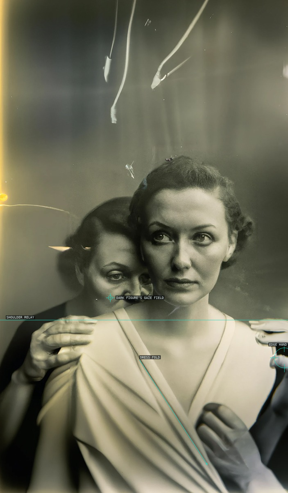
01-the-electrician
Two figures and their hands relay attention through a shallow portrait.
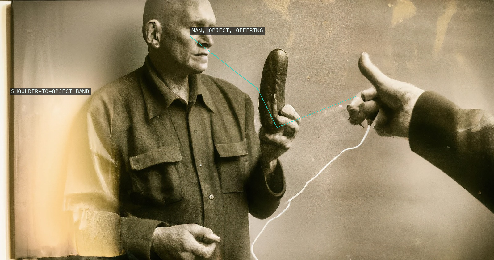
02-the-deal
A held object divides the long frame between a fixed figure and an offering hand.
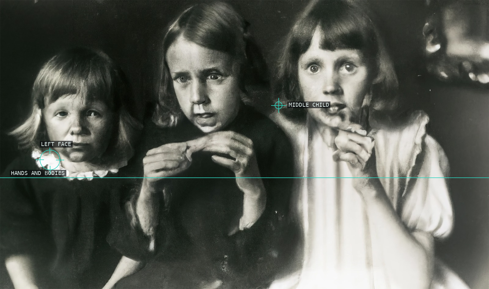
03-the-leftovers
Three children form an uneven horizontal relay of faces and hands.
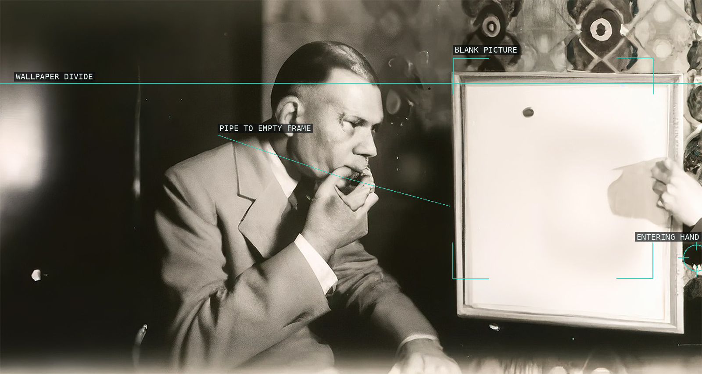
04-the-connaisseur
An empty inner frame exerts pressure on a seated figure.
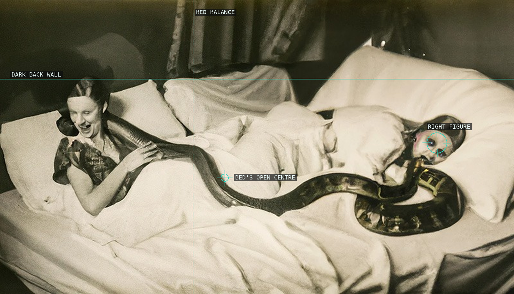
05-eternity
A broad bed balances bodies and a dark snake-like contour.
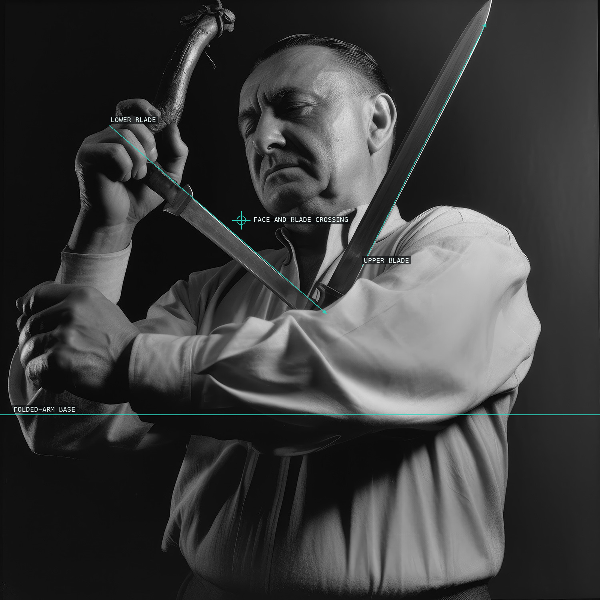
06-the-memory
Crossing blades make a guarded portrait into an X.
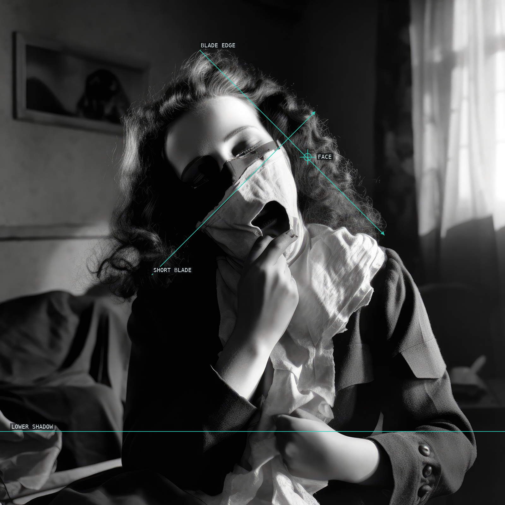
07-the-breath
Sharp diagonals close around a masked face.
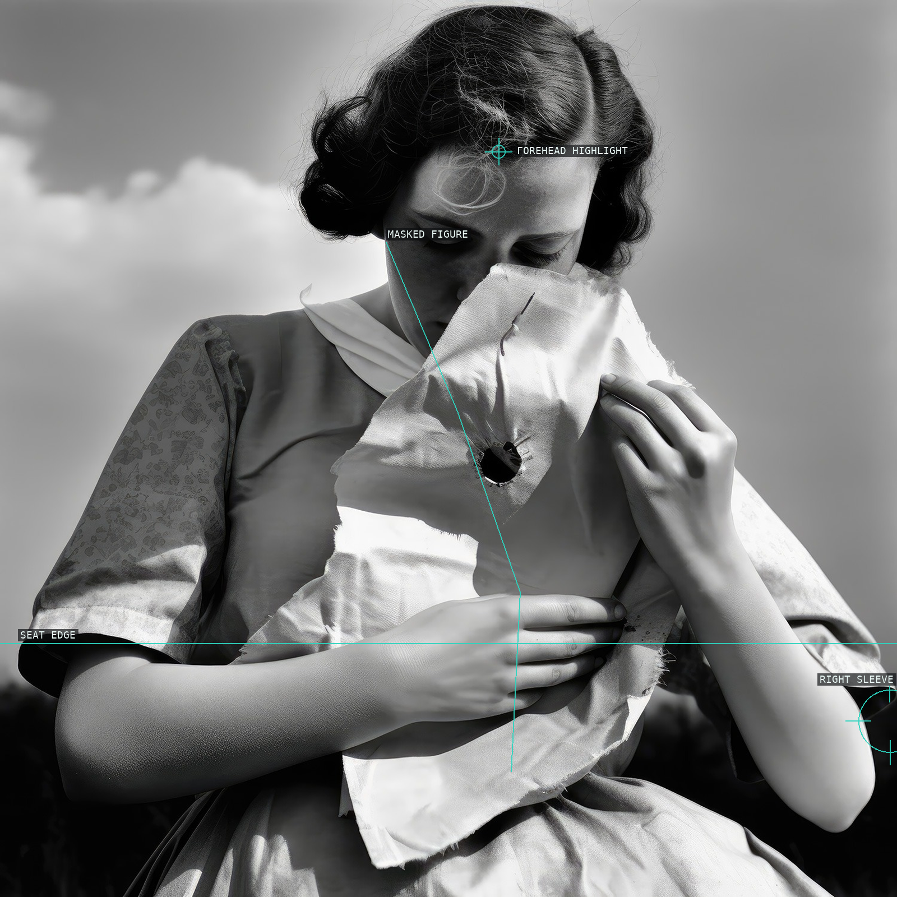
08-love
Window light and a central cloth divide the seated portrait.
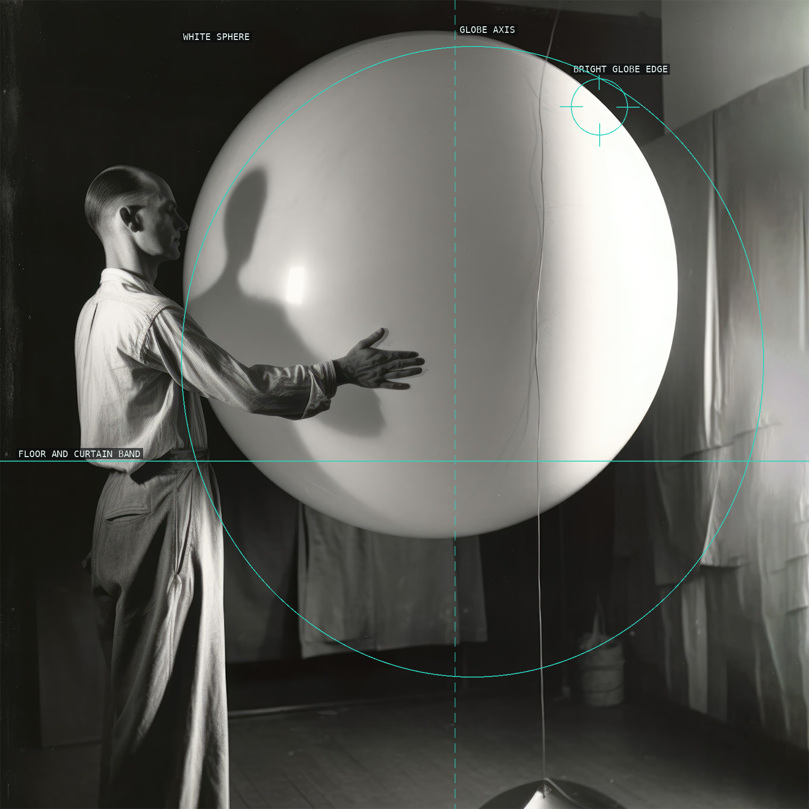
09-the-illusion
A luminous sphere overtakes the scale of the room.
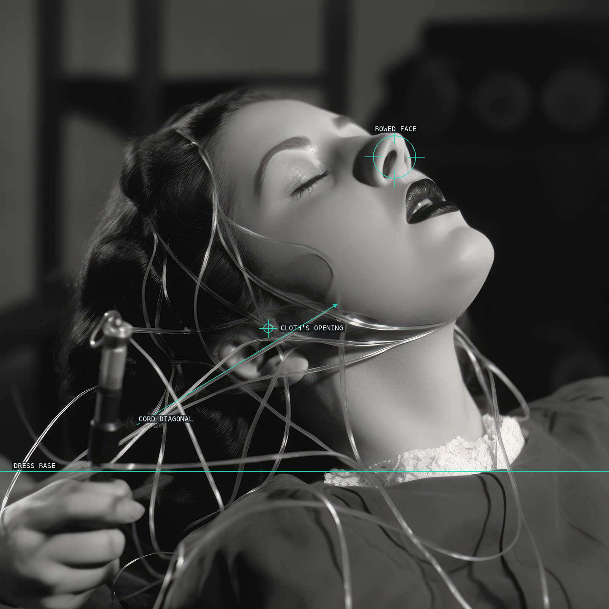
10-the-confession
Face, cloth, cords, and arms pull attention to a dark rupture.
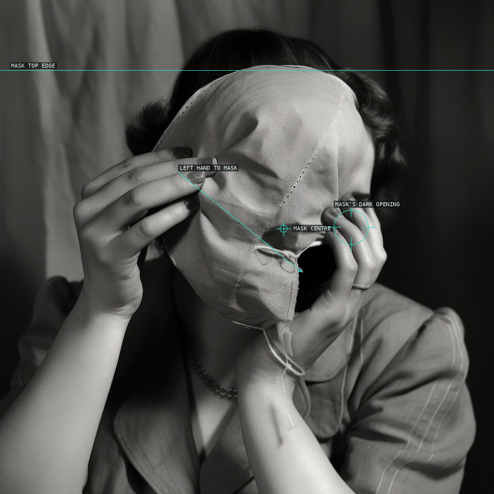
11-the-mask
Hands stretch a blank mask across a portrait.
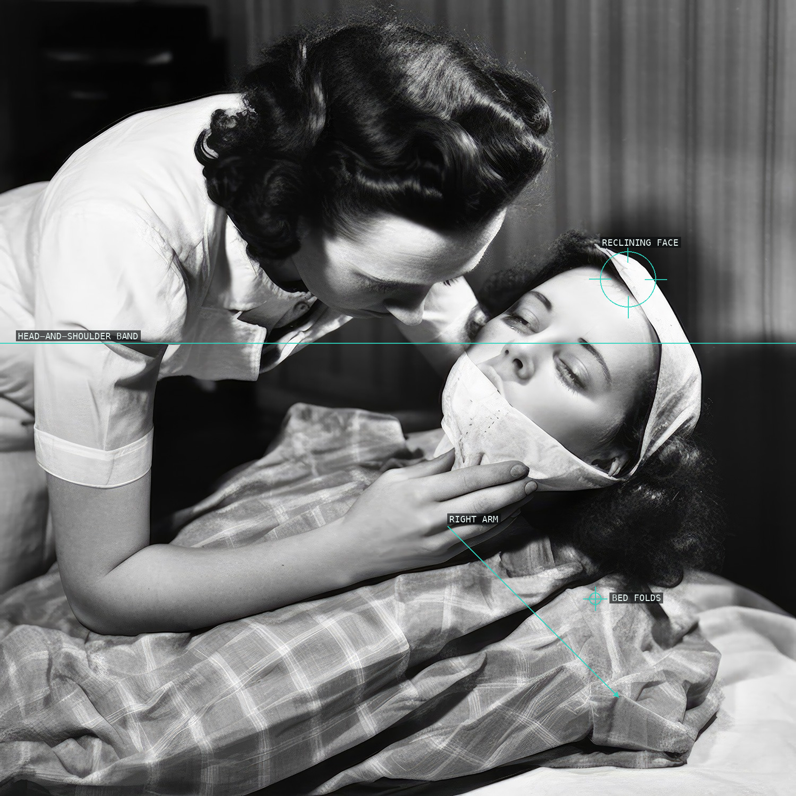
12-the-torso
An attendant and reclining figure make the bed a compressed stage.